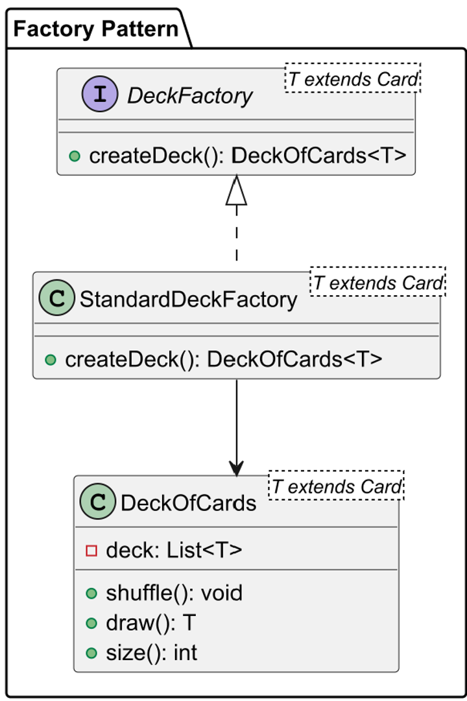
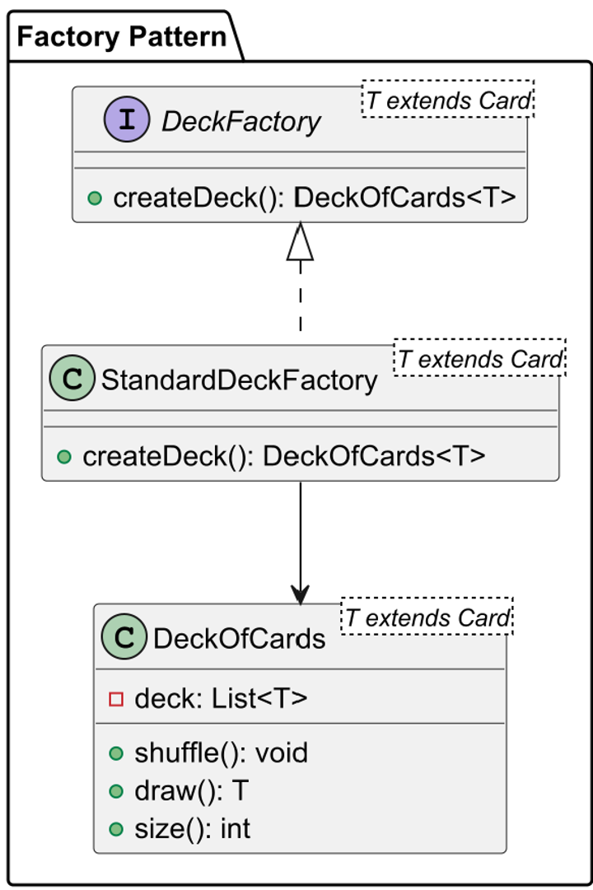
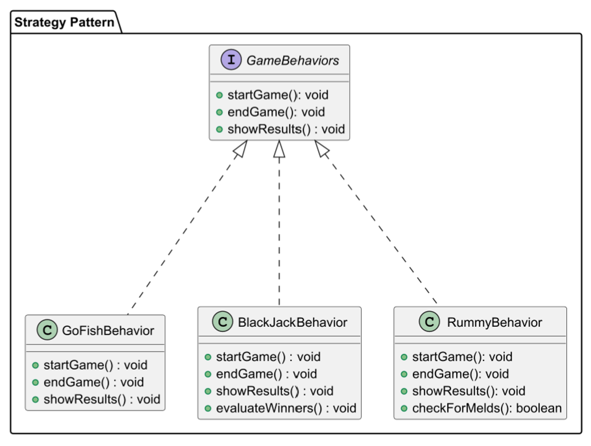
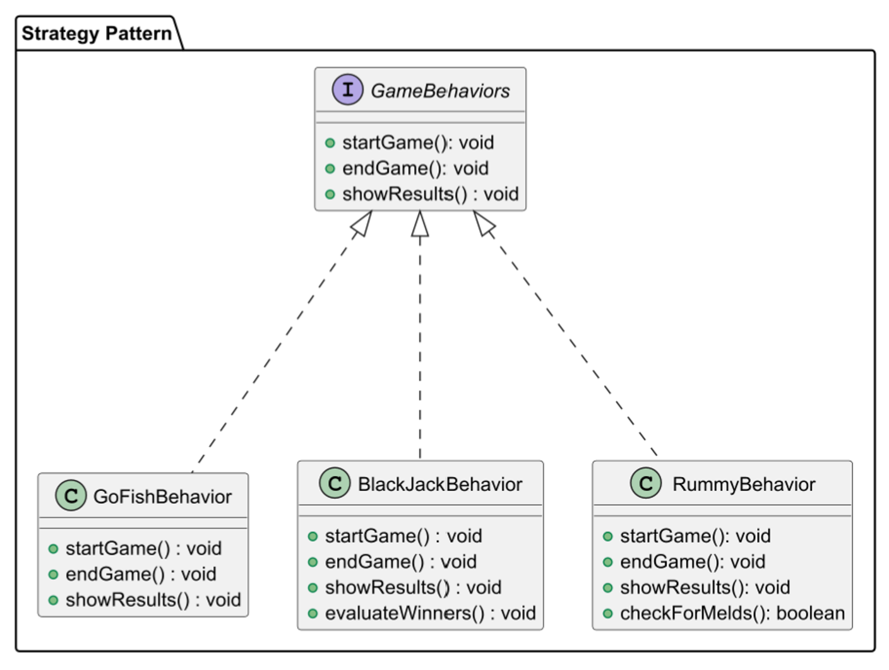

Hi! My name is Taylor, and I was born and raised in Minnesota. I enlisted into the Marine Corps at the age of 18 in which I served 5 years as aircrew. I am currently an undergraduate computer science major at the University of San Diego. I really enjoy the outdoors and find joy in doing hobbies like mountain biking and competitive shooting.
Projects
Birthday Paradox
Programmers: Iby Coto and Taylor Erickson
The intended purpose of this project is to familiarize ourselves with github and its capabilities while working as a team.
The Birthday paradox refers to the surprising probability that in a group of just 23 people, there's a better than even chance that at least two of them share the same birthday. This seems counterintuitive because there are 365 days in a year, so one might think the odds of two people having the same birthday would be quite low. However, the paradox arises because we're comparing every possible pair of people in the group, not just one specific pair. The probability increases as the group size grows, and at 23 people, there's roughly a 50% chance of a shared birthday. The reason the probability is higher than expected is that there are many pairs of people to consider, making it more likely that two people will have the same birthday.
This project demonstrates the Birthday Paradox in which the chance of someone having the same birthday in a group of people grows at a logarithmic rate. It gathers data that is produced by a random number generator, and tries to find within that data a similar day and month to prove the birthday paradox.
The design was approached by first designing each individual class and determining its responsibilities. Test cases were later developed to ensure that the code was ouputting as intended. It consisted of four classes: Simulator, Experiment, Trial, and Birthday.I personally implemented the Birthday, Experiment, and Simulator classes while Iby Coto implemented the Trial class and most of the test cases for these classes. The most challenging part of my implementation was formatting our data correctly so that it can be accurately and correctly compared. This was done using Java's API such as the enumator class, Month, and creating a toString method which formatted out day and month appropiately.
This project helped improve my ability to navigate github and to properly utilize test cases to ensure that the code works as intended consistently during development.
 

 

CardGameEmulator
Programmers: Iby Coto, Sebastian Mojica, Lucas Collin, and Taylor Erickson
The Card Game Emulator is an object-oriented Java project designed to simulate classic card games like Go Fish, Rummy, and more. The application provides a flexible and extensible architecture using core OOP principles, design patterns, and testable interfaces—making it easy to plug in new games, player strategies, and deck types.
How It Works
The Simulator class initializes the correct game rules, player types, and shuffling mechanisms. The engine then manages player turns, card draws, and round progression.
This code the takes to heart the Design Principles, specifically the two principles of Code to Interfaces and Favor Composition over Inheritance. Abstraction is important to this code because it allows the user to play various card games without knowing the implementation details behind it. This is done through the use of strategy patterns which also allow future implementation of other card games such as UNO or BlackJack.
Future Enhancements
- Add support for War, Blackjack, or custom game rules. - Integrate a GUI frontend using JavaFX or Swing. - Implement a networked multiplayer mode. - Extend to support custom decks (e.g., Uno, Pokémon).
Contact Me
terickson@sandiego.edu